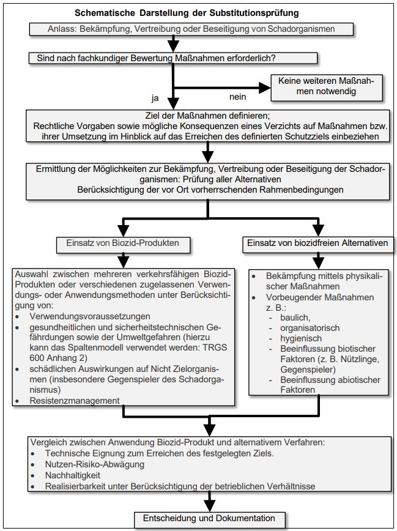

Der Einstieg in die Substitutionsprüfung kann über folgende Checkliste erfolgen:
Tabelle 1: Checkliste für die Informationsermittlung zur Substitutionsprüfung
| Welche Maßnahmen (inkl. baulicher, physikalischer und mechanischen) gibt es grundsätzlich, mit denen der betreffende Schadorganismus unschädlich gemacht werden kann bzw. dem Auftreten des Schadorganismus vorgebeugt werden kann? | |
| Gibt es anerkannte Substitutionsempfehlungen (Branchenspezifische Hilfestellungen, etc.)? | Ja Nein Welche? |
| Ist es möglich, mit alternativen Maßnahmen ohne Verwendung von Biozid-Produkten den Schadorganismus in der gewünschten Weise zu bekämpfen, ohne dass zusätzliche Gefährdungen für den Anwender und die Umwelt (z. B. durch den Schadorganismus, durch Klettern auf Leitern, o. ä.) bestehen? | Ja Nein Welche? |
| Müssen bestimmte Vorgaben (bestimmte Biozid-Produkte oder bestimmte Verfahren) eingehalten werden? | Ja Nein Welche? |
| Gibt es mehrere Biozid-Produkte, die für die Bekämpfung des Schadorganismus zur Verfügung stehen und geeignet sind? | Ja Nein Welche? |
| Gibt es für ein Biozid-Produkt unterschiedliche geeignete Anwendungsverfahren? | Ja Nein Welche? |
| Produkt oder Verfahren mit den geringsten Gefährdungen (Gesundheits- und Umweltgefährdung sowie Brand- und Explosionsgefährdung) auswählen unter Berücksichtigung der Anwendungsfrequenz und -menge und Abwägungsgründen auf der Grundlage der betrieblichen Verhältnisse einschließlich der Kosten: | |

Unter Berücksichtigung der in Abschnitt 4.2.1 in Verbindung mit Anhang 7.1 aufgeführten zusätzlichen Beurteilungskriterien kann der Entscheidungsprozess in Analogie zu den Anhängen 1 bis 3 der TRGS 600 vergleichend in Tabellen vorgenommen werden.
Mustertabelle, mit der diese Kriterien erfasst und bewertet und dokumentiert werden können.
| Benennung des Anwendungsziels | |||
| Entscheidungskriterien | Vorbeugende Maßnahme oder physikalische Bekämpfungsmaßnahme | Alternative 1 Biozid-Produkt / Anwendungsverfahren |
Alternative 2 Biozid-Produkt / Anwendungsverfahren |
| Bezeichnung des Verfahrens | |||
| Zielorganismen/Wirkspektrum | |||
| Biozid-Produkt, Name und Produktart | |||
| Biozidwirkstoff(e) | |||
| Weitere gefährliche Inhaltsstoffe | |||
| Anwendungsbereich | |||
| Anwendungsmethode | |||
| Anwendungsmenge und -häufigkeit | |||
| Verwenderkategorie, erforderliche Qualifikation | |||
| Beschreibung der Verwendung oder des Verfahrens (Biozid-Produkt / Anwendungsverfahren, alternative Verfahren) | |||
| Gefahrenhinweise: Gesundheitliche Gefährdung des Anwenders durch inhalative, dermale und orale Exposition Gefährdungen durch physikalischchemische Eigenschaften (hier: Brand- und Explosionsgefährdungen) Umweltgefährdung (Einstufung / Gefahrenhinweise) |
|||
| Schädliche Auswirkungen auf die Gesundheit Dritter; Nicht-Zielorganismen | |||
| Verfahren für den Anwendungsbereich/das Anwendungsziel geeignet | |||
| Die Abwägung von Nutzen und Risiken berechtigen zum Einsatz des Biozid-Produkts | |||
| Entscheidung | |||